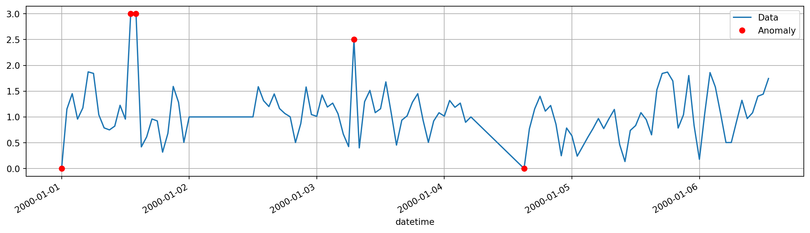
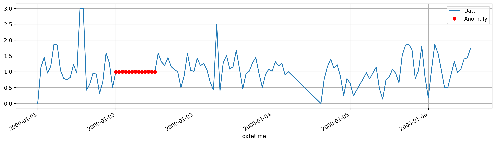
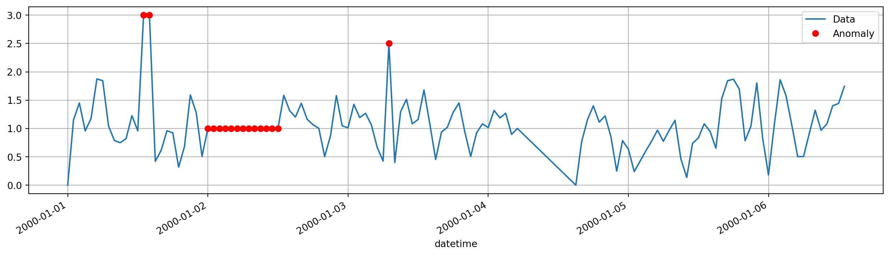
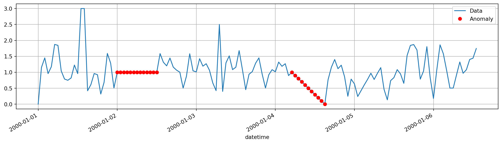
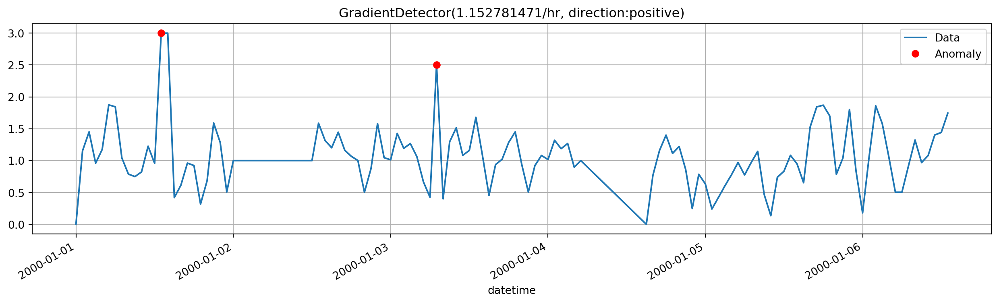
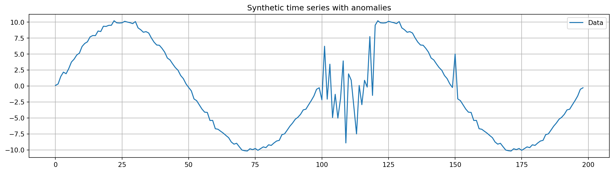
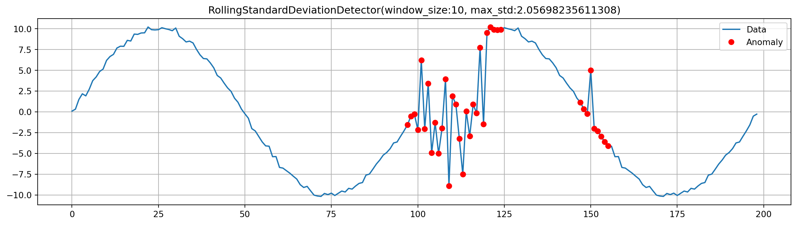
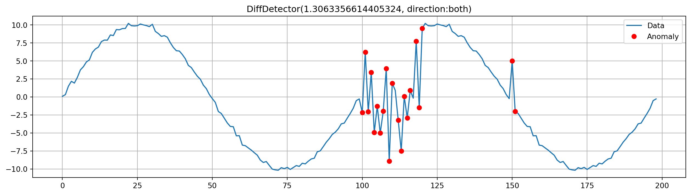
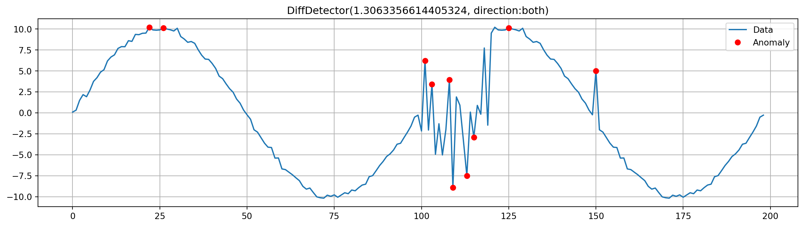

import numpy as np
import pandas as pd
from tsod import (
ConstantValueDetector,
RangeDetector,
GradientDetector,
CombinedDetector,
DiffDetector,
ConstantGradientDetector,
RollingStandardDeviationDetector,
HampelDetector
)Getting started
Basic anomaly detection using RangeDetector, GradientDetector, and more.
series = pd.read_csv("../../tests/data/example.csv", parse_dates=True, index_col=0).iloc[:, 0]Range
rd = RangeDetector(min_value=0.01, max_value=2.0)
anomalies = rd.detect(series)
# plot results
ax = series.plot(label="Data", legend=True, figsize=(16, 4))
ax = series[anomalies].plot(style="ro", label="Anomaly", legend=True, ax=ax, grid=True)
Constant value
cd = ConstantValueDetector()
anomalies = cd.detect(series)
# plot results
ax = series.plot(label="Data", legend=True, figsize=(16, 4))
ax = series[anomalies].plot(style="ro", label="Anomaly", legend=True, ax=ax, grid=True)
Combination
combined = CombinedDetector(
[RangeDetector(max_value=2.0), ConstantValueDetector()]
)
anomalies = combined.detect(series)
# plot results
ax = series.plot(label="Data", legend=True, figsize=(16, 4))
ax = series[anomalies].plot(style="ro", label="Anomaly", legend=True, ax=ax, grid=True)
Constant gradient
cgd = ConstantGradientDetector()
anomalies = cgd.detect(series)
# plot results
ax = series.plot(label="Data", legend=True, figsize=(16, 4))
ax = series[anomalies].plot(style="ro", label="Anomaly", legend=True, ax=ax, grid=True)
Gradient
magd = GradientDetector()
# Fit the detector to set the absolut maximum gradient theshold from the first 10 points of the series.
magd.fit(series[0:10])
anomalies = magd.detect(series)
# plot results
ax = series.plot(label="Data", legend=True, figsize=(16, 4))
ax = series[anomalies].plot(style="ro", label="Anomaly", legend=True, ax=ax, title=magd.__str__(), grid=True)# Do the same thing but accept large negative gradients
magd = GradientDetector(direction="positive")
magd.fit(series[0:10])
anomalies = magd.detect(series)
# plot results
ax = series.plot(label="Data", legend=True, figsize=(16, 4))
ax = series[anomalies].plot(style="ro", label="Anomaly", legend=True, ax=ax, title=magd.__str__(), grid=True)
Rolling standard deviation
Can be used to detect sudden large variations
# Create synthetic data with anomalies
rng = np.random.default_rng(42)
normal_data = pd.Series(
rng.normal(size=100, scale=0.3) + 10.0 * np.sin(np.linspace(0, 2 * np.pi, num=100))
)
abnormal_length = 20
abnormal_data = pd.Series(rng.normal(size=abnormal_length, scale=5.0) + normal_data.iloc[-1])
all_data = pd.concat([normal_data, abnormal_data, normal_data[abnormal_length+1:]], ignore_index=True)
all_data[150] = 5.0 # addition anomaly
ax = all_data.plot(figsize=(16, 4), title="Synthetic time series with anomalies", legend=True, label="Data", grid=True)
All data is within an acceptable range, but the variation is larger than expected and thus an anomaly.
rsd = RollingStandardDeviationDetector(window_size=10, center=True)
rsd.fit(normal_data) # Fit the detector to the normal part of the data
anomalies = rsd.detect(all_data)
# plot results
ax = all_data.plot(figsize=(16, 4), label="Data", legend=True)
ax = all_data[anomalies].plot(ax=ax, style="ro", label="Anomaly", title=rsd.__str__(), legend=True, grid=True)
Diff
The diff detector detects sudden changes, without consideration of the time elapsed
drd = DiffDetector()
drd.fit(normal_data)<tsod.detectors.DiffDetector at 0x7f3a41d47350>anomalies = drd.detect(all_data)
ax = all_data.plot(figsize=(16, 4), label="Data", legend=True)
ax = all_data[anomalies].plot(ax=ax, style="ro", label="Anomaly", legend=True, title=drd.__str__(), grid=True)
Hampel filter
Detects outliers by comparing each point to the its surrounding window using median absolute deviation.
hmp_detector = HampelDetector(window_size=5, threshold=1)
anomalies = hmp_detector.detect(all_data)
ax = all_data.plot(figsize=(16, 4), label="Data", legend=True)
ax = all_data[anomalies].plot(ax=ax, style="ro", label="Anomaly", legend=True, title=drd.__str__(), grid=True)